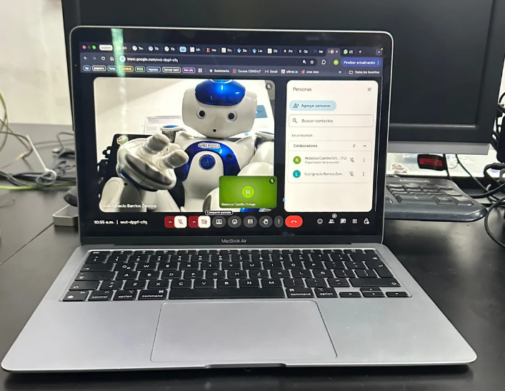

De chiquita, recuerdo ver a mi hermana mayor practicar su sonrisa en el espejo para sus fotos de graduación. En
ese momento, me pareció algo inteligente de hacer para salir algo decente en sus fotos. Después, aprendí que
era una señal de su autoconciencia, una capacidad cognitiva que comúnmente se mide con la prueba del espejo.
En este experimento se coloca una marca en el cuerpo de un animal y se observa si usa el espejo para tocar o
investigar la marca en su propio cuerpo. Si lo hace, se interpreta como evidencia de que reconoce que el reflejo
es él mismo.
Este año, estuve en el verano de investigación en el laboratorio de robótica cognitiva. La cognición, en pocas
palabras, es comprender cómo los seres (ya sean humanos, animales o incluso robots) procesan información,
aprenden, razonan y resuelven problemas. Por ejemplo, cuando mi hermana se reconocía a sí misma en el
espejo, no solo veía una imagen, sino que entendía que esa imagen era ella. Esta capacidad de
autorreconocimiento es una forma avanzada de cognición y un claro ejemplo de su autoconocimiento. No se
trata solo de ver, sino de interpretar lo que se ve y relacionarlo con uno mismo. De hecho, el Dr. Bruno (con quien
estábamos en el laboratorio) nos contaba que este es un experimento clásico en psicología del desarrollo, y que
él la aplicaba con sus hijos cuando eran bebés, poniéndoles un post-it en la cabeza para ver si, al verse en el
espejo, se lo quitaban.
Lo que hicimos este verano no fue enseñarle al robot a reconocerse en el espejo —eso ya se ha logrado,
normalmente dándole al robot un modelo cinemático pre-programado (un “manual de instrucciones”) de su
cuerpo—. En cambio, hicimos que el robot usara el espejo para aprender por sí mismo cómo se mueve y cómo
se ve, permitiéndole construir un modelo interno de su propio cuerpo desde cero.

El robot saludando a la cámara.
Piensa en como un bebé agita los brazos y las piernas al azar solo para ver qué sucede. Nuestro robot hizo
exactamente eso: movió sus articulaciones y observó la silueta que aparecía en el 'espejo'. Al repetir esto muchas
veces, creó su propio mapa mental que conecta cada uno de sus movimientos con la imagen que produce. De
está forma, al desarrollar un mapa sensoriomotor, el robot pudo entender la conexión entre "lo que hago" y "lo
que veo". Así, logró aprender esta relación clave: "si me muevo así, me veré así".
Así como mi hermana aprendió a controlar su sonrisa frente al espejo, o los bebés reconocen su propia imagen,
nuestro robot puedo desarrollar su propio esquema corporal a través de la autoobservación. Esto es la base
para que, en el futuro, se puedan imitar posturas de un video o en tiempo real sin necesidad de ser programado
explícitamente para eso.
Sobre la autora
Rebecca Shaday Castillo Ortega
A mi mamá le gustaba leer Tom Sawyer de pequeña. En el libro, hay un personaje llamado Becky, y mi mamá siempre quiso ponerle así a alguna de sus hijas. Soy la segunda de tres hijas y, aunque no podría ser más diferente a mi familia, ellos son mi mayor inspiración para estudiar la Licenciatura en Inteligencia Artificial, en la que actualmente estoy cursando mi tercer semestre. Me enseñaron que el pensar es para el hacer, y saber que mañana puedo seguir aprendiendo hace el futuro más emocionante.